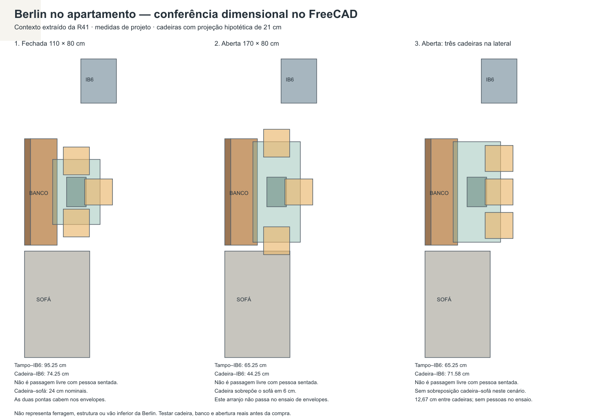

21/10/2026, horário de São Paulo. Comparação da R42 com a R41, decisões desta conversa, documentos vigentes, especificações e preços já registrados. Os nomes de pastas com 2026-10-22 foram preservados. Não houve medição no apartamento, nova cotação, compra ou contato com fornecedores.
FreeCAD R42 conferido · Como alternar as configurações · Verificação do arquivo final
As decisões de implantação estão representadas no estudo. A configuração aberta com três cadeiras laterais elimina a colisão cadeira–sofá nos envelopes testados. Os dois apoios do quarto foram removidos. A capacidade de armazenamento existente foi preservada. FGVTN permanece uma especificação candidata para orçamento: caixas, engates e furações não foram convertidos.
Cópias dos documentos anteriores estão em Documentos_antes. A cópia pré-correção do CAD e o resultado técnico da auditoria estão preservados. A R41 original também foi preservada.
A folha antiga BancoFolhaR31 foi ocultada e identificada como histórica, sem alterar o banco. Na reabertura final: 5.526 objetos, nenhuma referência quebrada ou arquivo interno faltante; 1.271 arquivos de geometria idênticos aos da R42 pré-auditoria. Alternar os cenários Berlin manualmente, exibindo apenas um por vez. SHA256 final: b30ae9ab9c82620ecdab26b2cfae589037954356d515b483b5b6849f76e4bc26.
| Decisão | Resultado e limite |
|---|---|
| Berlin fechada | 110 × 80 cm, altura total 79 cm. Uma cadeira em cada ponta e uma na lateral. Sem sobreposição nos envelopes ensaiados. Inserção real das cadeiras ainda desconhecida. |
| Berlin aberta | 170 × 80 cm, três cadeiras na lateral livre. Centros separados 56,67 cm; 12,67 cm entre cadeiras de 44 cm; margens de 6,33 cm. Não equivale a conforto de três pessoas comprovado. |
| Colisão com o sofá | Resolvida no novo arranjo de envelopes. O cenário aberto com cadeiras nas pontas continua como comparação rejeitada: interferência de 6 cm. |
| Corredores | Mesa aberta: tampo a 15 cm do sofá e 65,25 cm do corpo da geladeira. Mesa fechada: cadeira a 24 cm do sofá e 74,25 cm da geladeira, com projeção hipotética de 21 cm. Corredor lateral completo, pessoas sentadas, retirada de cadeiras e geladeira aberta não estão validados. |
| Banco e armazenamento | Banco e interiores mantidos. A guarda da esteira da Berlin não foi confirmada pelo fabricante; não assumir que usa ou dispensa o espaço destinado à folha antiga. |
| Apoios de óculos/celular | Peca108 e Peca109 removidos da árvore ativa. Cabeceira, iluminação, armário superior e demais móveis preservados. Excluídos do escopo de orçamento. |
| Nove gavetas | Sete candidatas de 500 mm e duas de 400 mm, códigos 54FGOC12500TSX0 / 54FGOC12400TSX0. Curso documentado 475/375 mm; profundidade livre mínima 520/420 mm ainda não comprovada. Os 72 arquivos de geometria dos componentes existentes permaneceram idênticos à R41. |
| Dobradiças | 46 candidatas de portas comuns corretamente mapeadas; quatro do canto e seis do espelheiro separadas. São quantidades de dobradiças, não de portas. Carga, recobrimento e interferências exigem validação. |
| Revestimentos e vaso | Revestimentos novos de cozinha e banheiro mantidos no escopo. Vaso existente pode permanecer. Não foi gerado quantitativo definitivo de revestimento nem aprovada execução. |
| Exclusões do orçamento | Compra de cadeira do escritório, PlayStation, cama e dois apoios excluída. Não presumir nova compra de item existente. |
| Banheiro: tubulação | Registrada a escolha de faixa discreta no canto do teto e descida junto ao gabinete. É direção estética; infraestrutura, percurso permitido, instalação e acabamento técnico continuam pendentes. |
| Uso do PS5 | Registrado que será levado raramente entre sala e escritório; compra excluída. Não se presume instalação complexa entre ambientes. |
| Prazo e coordenação | Meta preservada: dois meses após as chaves, mudança no terceiro, profissional coordenando equipes. Não há confirmação de viabilidade sem levantamento, contratações e prazos dos fornecedores. |
| Painel, prateleiras e acabamentos decorativos | Continuam frentes de economia a discriminar por módulo. Não houve simplificação geométrica definida/aplicada nesta R42; não contabilizar economia sem proposta comparável. |
Teto: 30% de R$ 350.000 = R$ 105.000. A auditoria confirma essa conta e as exclusões, mas não confirma que o investimento completo já cabe nesse teto.
| Comparação | Conta |
|---|---|
| Nove pares de guias FGVTN | 7 × R$ 84,58 + 2 × R$ 63,20 = R$ 718,46 |
| Referência Blum das guias | R$ 3.241,37; diferença de R$ 2.522,91 |
| 46 dobradiças comuns | 46 × diferença de R$ 23,90 = R$ 1.099,40 |
| Economia bruta indicativa | R$ 3.622,31, antes de adaptação, frete e confirmação de kits |
Valores são referências da pesquisa de 21/10/2026, não nova cotação nem economia contratada. Confirmar engates incluídos no produto de 500 mm. Não somar os 18 engates Blum aos kits FGVTN, nem as 46 novas dobradiças aos 56 conjuntos antigos. Berlin e mesa sob medida devem aparecer em propostas alternativas, nunca somadas como duas compras.
Esquerda: configuração fechada. Centro: antigo arranjo aberto rejeitado. Direita: configuração aberta com três cadeiras na lateral.

Resumo vigente · Painel de decisões · Escopo para orçamento · Conferência física · Relatório técnico e fontes comerciais · Mapeamento das ferragens · Cálculos Berlin